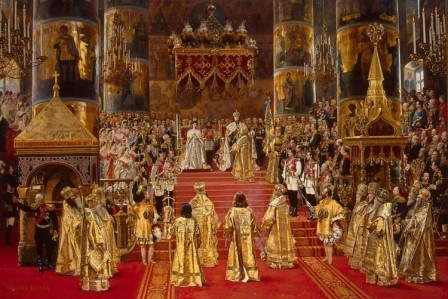
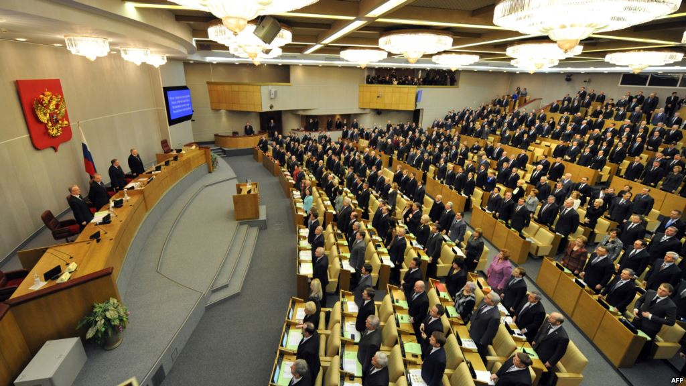

Форма правление
Фо́рма госуда́рственного правле́ния — элемент формы государства, который определяет систему организации высших органов государственной власти, порядок их образования, сроки деятельности и компетенцию, а также порядок взаимодействия данных органов между собой и с населением, и степень участия населения в их формировании:
Форма правления является старейшим элементом, характеризующим устройство государства, который начали изучать ещё в Древней Греции. В различных периодах истории форма правления имела различный смысл. Так, в аграрном обществе значение формы правления сводилось лишь к определению того, каким образом замещается должность главы государства — в порядке наследования или путём выборов. По мере разложения феодализма и перехода к индустриальному обществу, сопровождавшегося ослаблением власти монархов, появлением и укреплением народного представительства, формы правления стали развиваться. Наибольшую значимость приобрело не то, как происходит передача власти — наследственный или выборный глава государства в стране, а то, как организуются отношения между главой государства, парламентом, правительством, как взаимно уравновешиваются их полномочия, — словом, как устроено разделение властей.
Монархия — форма правления, при которой высшая государственная власть пожизненно принадлежит единоличному главе государства — монарху, который занимает престол по наследству и не несёт ответственности перед населением.

Республика — форма правления, при которой высшие органы государственной власти избираются народом, либо формируются особыми представительными учреждениями на определённый срок и несут полную ответственность перед избирателями.
